Praktikum 6 membahas pengelolaan state pada Flutter melalui setState() dan Provider. State lokal menggunakan StatefulWidget dan setState() untuk mengelola jumlah porsi pada halaman detail resep. Selanjutnya, state global menggunakan ChangeNotifier dan Provider untuk mengelola daftar resep favorit yang digunakan bersama oleh halaman Home, Detail, badge AppBar, dan halaman Favorit. Pada latihan, aplikasi dikembangkan dengan pengaturan tema gelap/terang serta fitur menghapus seluruh resep favorit.
Membuat project Flutter dengan nama resepku, kemudian menyiapkan folder models, data, providers, pages, dan widgets di dalam folder lib. File test bawaan widget_test.dart dihapus sesuai instruksi modul karena praktikum ini belum menggunakan pengujian tersebut.
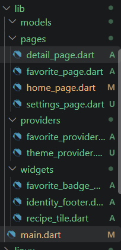
Gambar 1. Struktur folder project ResepKu
Membuat file lib/models/recipe.dart untuk merepresentasikan data satu resep. Model Recipe memiliki data seperti id, name, cuisine, difficulty, waktu persiapan, waktu memasak, servings, kalori, rating, image, dan ingredients. Getter totalTimeMinutes digunakan untuk menghitung jumlah waktu persiapan dan memasak.
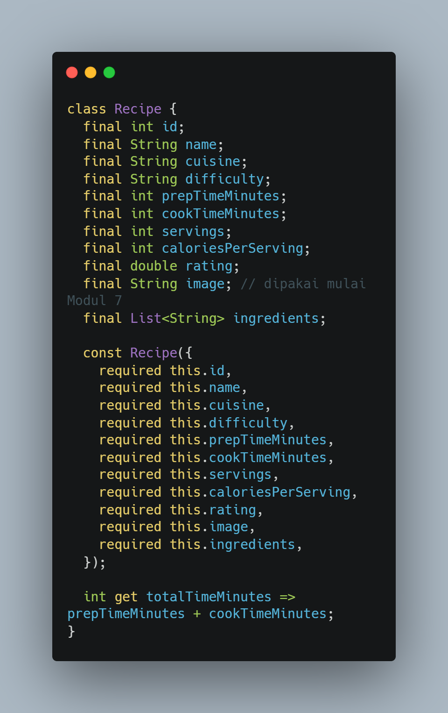
Gambar 2. Implementasi model Recipe
Membuat file lib/data/dummy_recipes.dart yang berisi enam data resep. Data tersebut menggunakan model Recipe dan menjadi sumber data yang ditampilkan pada halaman Home.
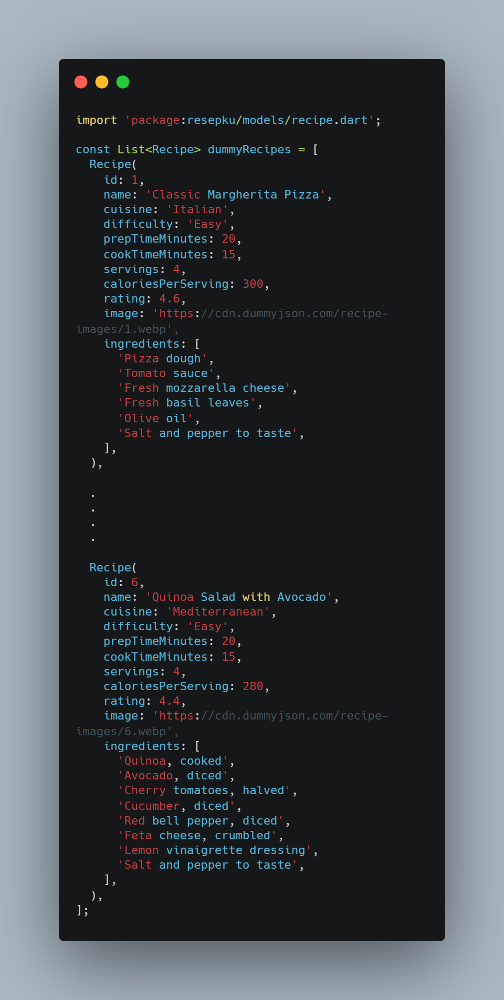
Gambar 3. Data dummy enam resep
Membuat widget IdentityFooter untuk menampilkan NIM dan nama pada bagian bawah aplikasi. Footer dipasang melalui properti builder pada MaterialApp agar tampil pada setiap halaman. Selanjutnya dibuat halaman Home dan RecipeTile untuk menampilkan daftar resep serta membuka halaman detail ketika resep dipilih.
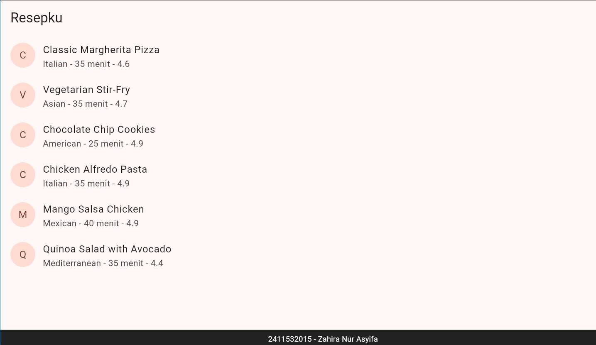
Gambar 4. Halaman Home dan footer identitas
Halaman Detail dibuat menggunakan StatefulWidget. Variabel _servings menyimpan jumlah porsi dan diinisialisasi dari data resep melalui initState(). Tombol tambah dan kurang mengubah nilai tersebut menggunakan setState(). Tombol kurang dinonaktifkan ketika jumlah porsi bernilai 1. Total kalori dihitung dari kalori per porsi dikalikan jumlah porsi.
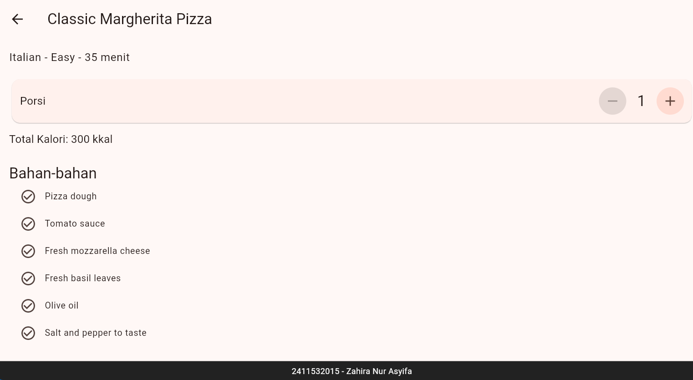
Gambar 5. Halaman Detail dengan pengaturan jumlah porsi
Pengujian dilakukan pada resep Classic Margherita Pizza. Jumlah porsi diubah menjadi 6 sehingga total kalori menjadi 1800 kkal (6 × 300 kkal). Tombol kurang tidak aktif ketika jumlah porsi bernilai 1.
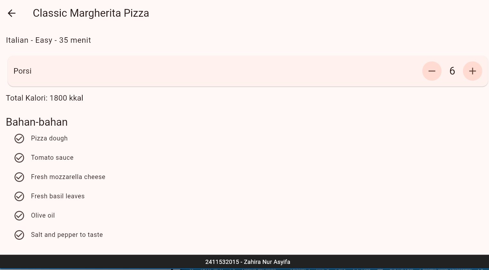
Gambar 6. Checkpoint 1: Classic Margherita Pizza dengan 6 porsi dan 1800 kkal
Pada eksperimen ini, RecipeTile diubah menjadi StatefulWidget dan setiap tile menyimpan status favoritnya sendiri melalui variabel _isFavorite. Ikon hati dapat berubah ketika ditekan, tetapi data tersebut hanya dimiliki oleh tile masing-masing sehingga tidak dapat digunakan secara langsung oleh HomePage, halaman Detail, atau widget lain.
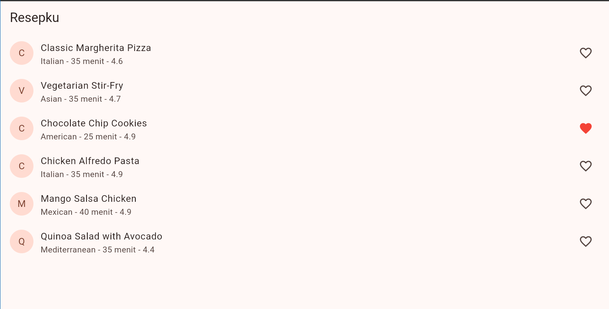
Gambar 7. Eksperimen perubahan ikon favorit dengan state lokal
Package provider ditambahkan melalui perintah flutter pub add provider. Selanjutnya dibuat FavoriteProvider yang meng-extend ChangeNotifier. Class ini menyimpan daftar resep pada _items, menyediakan getter items dan count, memeriksa status melalui isFavorite(), mengubah daftar melalui toggle(), serta memberi tahu widget yang mendengarkan perubahan dengan notifyListeners().
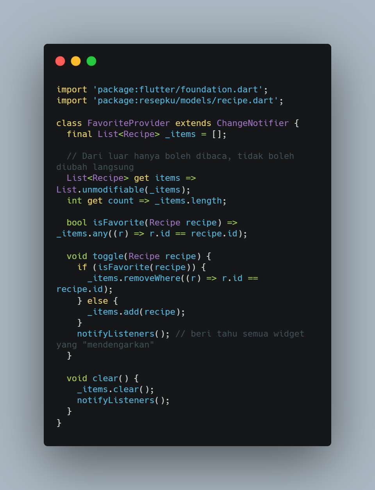
Gambar 8. Implementasi FavoriteProvider
FavoriteProvider didaftarkan menggunakan MultiProvider di atas MaterialApp agar seluruh halaman dapat mengakses state favorit. Builder IdentityFooter tetap dipertahankan agar footer identitas tampil pada semua halaman. Setelah perubahan main.dart dilakukan, aplikasi perlu di-hot restart agar provider yang didaftarkan pada main() aktif.
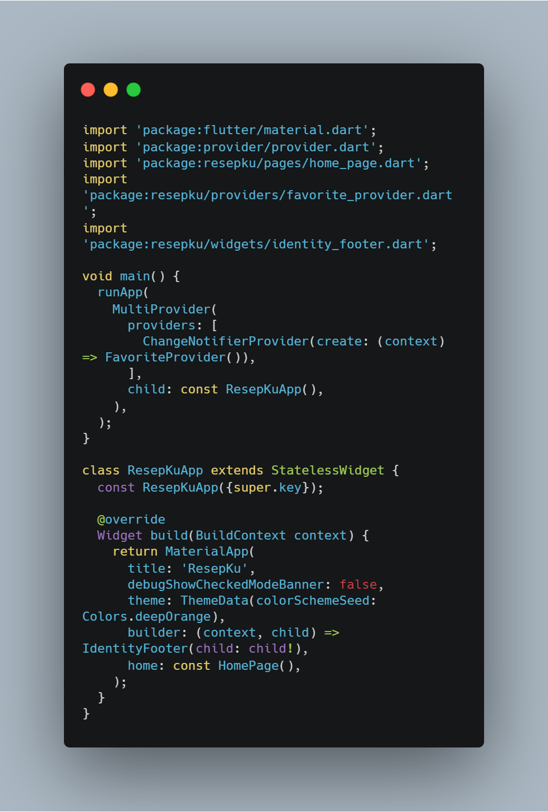
Gambar 9. Pendaftaran FavoriteProvider pada main.dart
RecipeTile dikembalikan menjadi StatelessWidget. Status favorit dibaca menggunakan context.watch<FavoriteProvider>() di dalam build agar widget diperbarui ketika data berubah. Ketika ikon hati ditekan, context.read<FavoriteProvider>() digunakan untuk memanggil toggle() tanpa memasang listener pada callback.
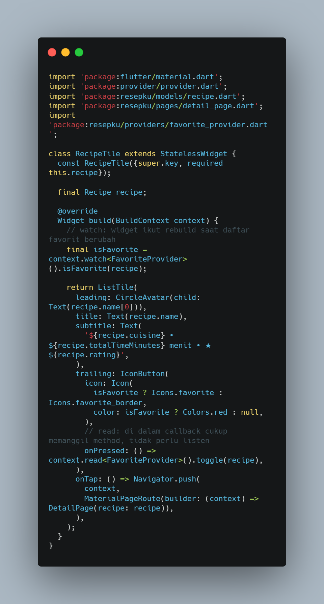
Gambar 10. RecipeTile membaca dan mengubah status favorit melalui Provider
Halaman Detail menggunakan context.watch untuk membaca status favorit resep yang sedang dibuka. Ikon hati ditambahkan pada actions AppBar. Ketika ditekan, tombol memanggil toggle() melalui context.read. Dengan demikian, halaman Detail menggunakan setState() untuk jumlah porsi dan Provider untuk status favorit.
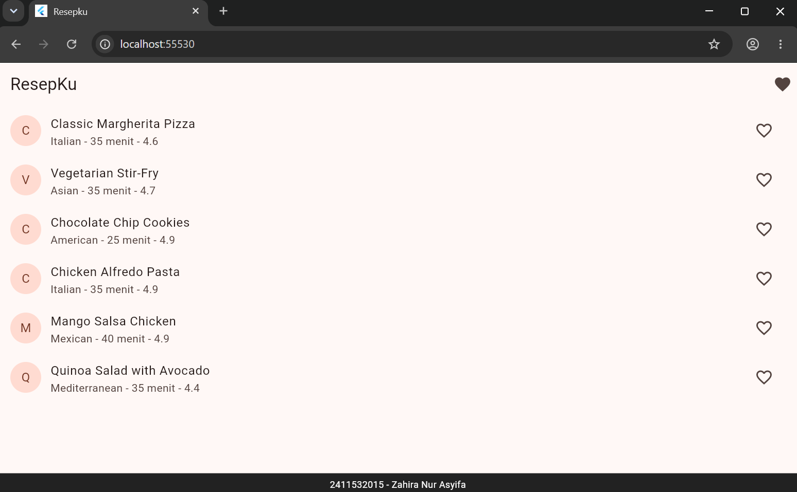
Gambar 11. Tombol favorit pada AppBar halaman Detail
Halaman FavoritePage dibuat untuk menampilkan daftar resep yang disukai. Widget Consumer<FavoriteProvider> membaca perubahan state dan membangun ulang tampilan ketika notifyListeners() dipanggil. Jika jumlah favorit nol, halaman menampilkan pesan bahwa belum ada resep favorit. Setiap resep juga memiliki tombol untuk menghapusnya dari daftar melalui toggle().
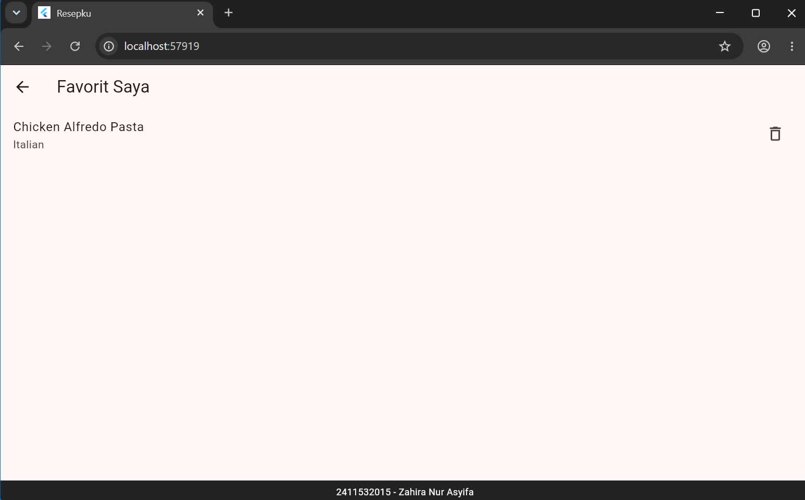
Gambar 12. Halaman Favorit yang menampilkan resep pilihan
Widget FavoriteBadgeButton dibuat sebagai tombol terpisah pada AppBar HomePage. Jumlah favorit dibaca menggunakan context.watch<FavoriteProvider>(). Badge menampilkan angka ketika jumlah favorit lebih dari nol. Tombol tersebut membuka halaman FavoritePage ketika ditekan.
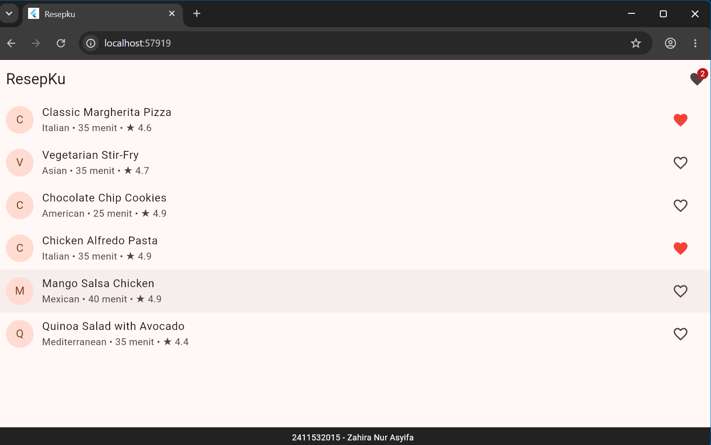
Gambar 13. Badge jumlah favorit pada AppBar Home
Pengujian dilakukan sesuai enam skenario pada modul untuk memastikan status favorit dapat digunakan bersama pada Home, Detail, badge, dan halaman Favorit. Selain itu, dilakukan pengujian bahwa jumlah porsi kembali ke nilai awal setelah halaman Detail ditutup dan dibuka kembali.
| No. | Skenario | Hasil yang diharapkan | Hasil pengujian |
|---|---|---|---|
| 1 | Tap ikon hati pada Margherita dan Alfredo di Home. | Ikon berwarna merah dan badge menunjukkan angka 2. | Sesuai modul |
| 2 | Buka detail Margherita. | Ikon hati di AppBar Detail terisi. | Sesuai modul |
| 3 | Di Detail, tap ikon hati lalu kembali ke Home. | Ikon Margherita kosong dan badge menunjukkan angka 1. | Sesuai modul |
| 4 | Tap badge pada AppBar. | Halaman Favorit hanya berisi Alfredo. | Sesuai modul |
| 5 | Hapus Alfredo dari halaman Favorit lalu kembali. | Muncul pesan belum ada resep favorit dan badge hilang. | Sesuai modul |
| 6 | Ubah porsi menjadi 2, kembali ke Home, lalu buka resep yang sama. | Porsi kembali ke nilai awal karena state lokal halaman sebelumnya sudah dibuang. | Sesuai modul |
Ikon hati dapat berubah karena setiap RecipeTile mengubah variabel _isFavorite miliknya menggunakan setState(). Namun, jumlah seluruh favorit tidak dapat dibaca langsung oleh HomePage karena variabel tersebut berada di state lokal masing-masing tile. Halaman Detail juga tidak dapat mengetahui status favorit dari tile karena keduanya tidak berbagi tempat penyimpanan state. Oleh sebab itu, data favorit perlu diletakkan pada state bersama menggunakan Provider.
Jumlah porsi hanya dibutuhkan oleh halaman Detail, sehingga cukup disimpan sebagai state lokal menggunakan setState(). Hal ini sesuai dengan skenario keenam pada C.7: ketika halaman Detail ditutup lalu dibuka kembali, jumlah porsi kembali ke nilai awal. Provider tidak diperlukan untuk data yang hanya digunakan oleh satu halaman dan tidak perlu dibagikan ke widget lain.
Ketika halaman Favorit dibuka, halaman tersebut tidak dapat menemukan FavoriteProvider jika provider hanya membungkus Scaffold di HomePage. Hal ini terjadi karena halaman Favorit dibuat sebagai route yang berada di luar cakupan subtree HomePage. Provider harus diletakkan di atas MaterialApp agar dapat diakses oleh seluruh halaman aplikasi.
Membuat ThemeProvider yang meng-extend ChangeNotifier untuk mengelola ThemeMode. Provider menyediakan getter dan method untuk mengubah tema serta memanggil notifyListeners(). ThemeProvider didaftarkan pada MultiProvider di main.dart. MaterialApp menggunakan theme, darkTheme, dan themeMode yang dibaca melalui context.watch<ThemeProvider>(). Halaman SettingsPage menyediakan SwitchListTile “Mode gelap”, sedangkan tombol pengaturan pada AppBar HomePage digunakan untuk membuka halaman tersebut.
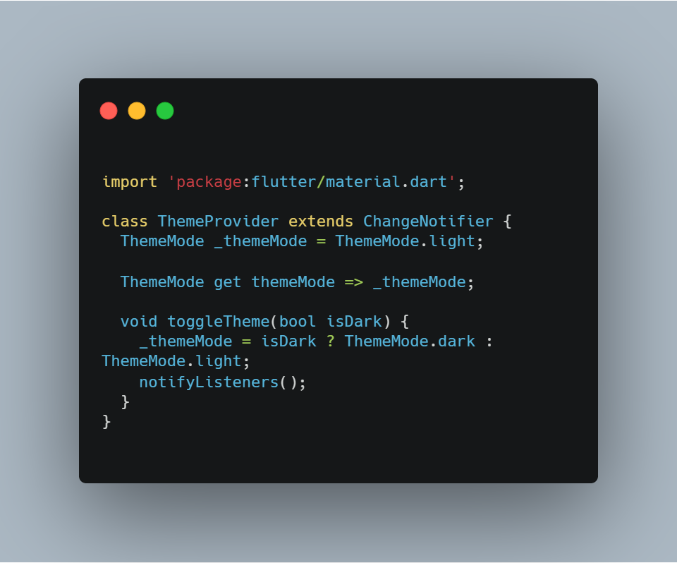
Gambar 15. Halaman Pengaturan dengan SwitchListTile Mode gelap
Hasil yang diharapkan adalah seluruh aplikasi berubah ke tema gelap ketika switch diaktifkan dan kembali ke tema terang ketika switch dinonaktifkan.
Menambahkan method clear() pada FavoriteProvider untuk mengosongkan daftar favorit dan memanggil notifyListeners(). Pada halaman Favorit ditambahkan tombol “Hapus semua” yang meminta konfirmasi pengguna melalui AlertDialog sebelum memanggil clear(). Tombol dibuat nonaktif ketika daftar favorit kosong.
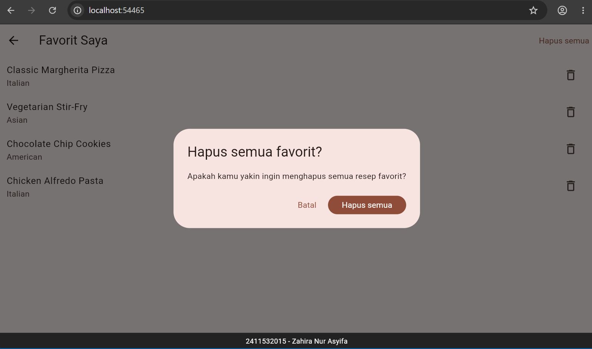
Gambar 16. Dialog konfirmasi untuk menghapus semua resep favorit
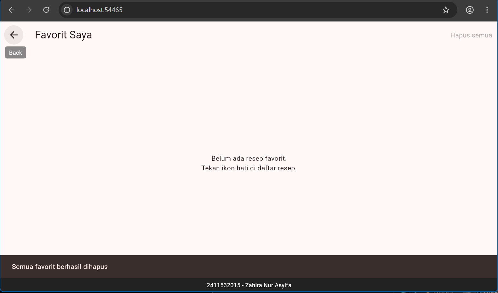
Gambar 17. Halaman Favorit setelah seluruh data dihapus
Praktikum 6 menunjukkan bahwa pemilihan pengelolaan state disesuaikan dengan cakupan penggunaan data. State lokal menggunakan StatefulWidget dan setState() sesuai untuk jumlah porsi yang hanya dibutuhkan pada halaman Detail. Sementara itu, data favorit digunakan oleh beberapa halaman dan widget sehingga dikelola sebagai state global menggunakan Provider, ChangeNotifier, dan notifyListeners(). Data tersebut dibaca melalui context.watch, context.read, dan Consumer. Pada latihan, pengelolaan state dikembangkan untuk mengatur tema gelap/terang serta menghapus seluruh daftar favorit dengan konfirmasi pengguna.
Source code project ResepKu dapat dilihat melalui repository berikut.
Lihat Repository GitHub